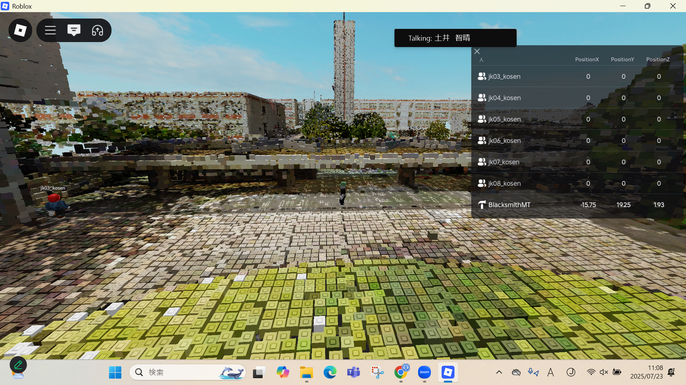

2-3 VR（バーチャルリアリティー：Virtual Reality）の体験


1.内容
workspeaceとrobloxを用いてVRを体験した。 2.感想
VR空間は自分の思っているよりも没入感が高くほんとにそこにいるようだった。
しかし操作面からみると動きにラグがあったり自分の感覚とずれることがあり、酔いそうになった。
VRはゲームや体験型のコンテンツなど可能性が大きくあると同時に改善点もいくつか感じた。
workspeaceとrobloxを用いてVRを体験した。 2.感想
VR空間は自分の思っているよりも没入感が高くほんとにそこにいるようだった。
しかし操作面からみると動きにラグがあったり自分の感覚とずれることがあり、酔いそうになった。
VRはゲームや体験型のコンテンツなど可能性が大きくあると同時に改善点もいくつか感じた。